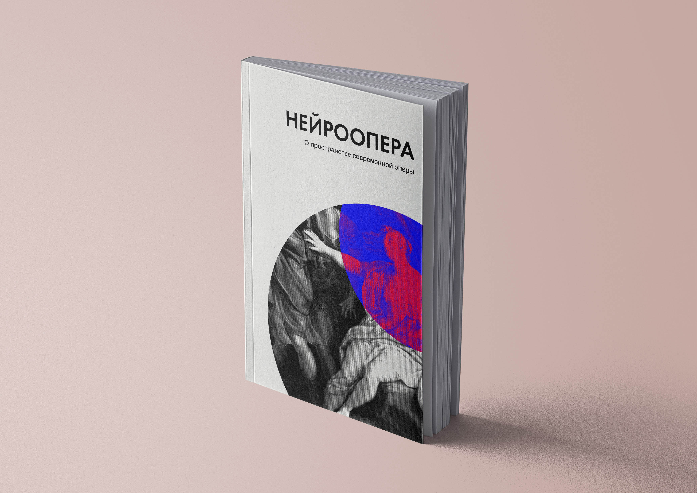

Нейминг и логотип
В качестве нейминга бренда была использована фамилия композитора Скрябина, который впервые использовал цвет в музыке, тем самым создав понятие светомузыка.
Привет! Я Полина, изучаю графический и веб-дизайн в Школе Дизайна ВШЭ. На этом сайте вы можете посмотреть мой первый проект, проследить за историей его развития и увидеть, во что он превратился в итоге.

Скрябин-центр — это то место, где исполняется экспериментальная музыка, генерируемая нейросетью.
Первоначально проект представлял собой нейрооперу: к голове посетителя должна была подключаться нейрогарнитура, считывающая нервные импульсы головного мозга и преобразующая их в музыку. В итоге проект трансформировался в культурный центр экспериментальной музыки. В моем понимании, экспериментальная музыка — это музыка, генерируемая нейросетью. Посетители концертов могут взаимодействовать с пространством центра — касаться стен и специальных приборов, тем самым влияя на воспроизведение музыки и создавая визуальные эффекты (генеративное искусство).
Целью проекта является популяризация современной экспериментальной музыки и искусства в России и за рубежом, поддержка и объединение талантливых представителей современного искусства, выступающих вне рамок мейнстрима.

Было решено совместить две идеи: нотный стан и свзь, что в итоге вылилось в данный логотип. Две буквы «о» соединены между собой, что является символом нейрона и нотного стана.

В качестве нейминга бренда была использована фамилия композитора Скрябина, который впервые использовал цвет в музыке, тем самым создав понятие светомузыка.
В основе метафоры логотипа заложен светомузыкальный аппарат «Кристалл», который использовался в различных представлениях, например, в «Прометее» Скрябина.
В основе геометрии логотипа заложен угол 45 градусов. Этот же угол поддержан симметрией букв логотипа.
Фундаментом палитры бренда служит сочетание трёх цветов: Black, Magenta, Electric Blue.

#000000
#F013FF
#84F0FF
Работа с цветом построена на использовании нейтральных и фирменных серой и черной палитр в качестве основы и фирменного синего для расстановки акцентов.
#4A00D0
#84F0FF
#000000
#9224FF
#40FFD6
#F013FF
Данное видео является примером инсталляции к выставке в культурном центре. Анимация эквалайзера была выполнена в программе Adobe After Effects.
Здесь собраны четыре серии плакатов, среди которых есть типографические, графические и веб-плакаты. При создании плакатов были использованы фирменные цвета проекта и шрифт Futura.


На занятиях по арт-практике мы занимались адаптацией плакатов под веб-пространство. Вначале мы разрабатывали плакат без анимации и интерактива, а в третьем модуле с помощью JavaScript мы добавляли в наши плакаты интерактивные элементы. Мои веб-плакаты представляют собой ознакомительные афиши о проекте, из которых можно узнать о Нейроопере, узнать о грядущих событиях в оперном театре.
Во втором модуле мы разрабатывали плакат без анимации и интерактива, используя лишь HTML и CSS. Мой веб-плакат представляет собой ознакомительную афишу о проекте, из которой можно узнать о Нейроопере, узнать о грядущих событиях в оперном театре. Сайт адаптивный и подстраивается под различные разрешения для разных устройств: десктоп, планшет, телефон.
Книга представляет собой многостраничное издание, брошюру, рассказывающую о проекте, программе оперы и о месте оперы в современном мире.
